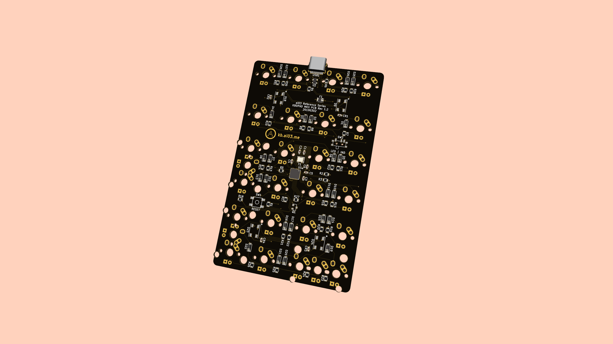

In collaboration with ai03, the KBDPAD has been redesigned inside and out.
Enjoy a high-quality, versatile numpad for affordable prices.
Product Page Original Announcement DIY Resources User ManualThin bezels have been carefully outfitted with a seamless aesthetic for a modern, minimal look.
A brass plate adds the premium touch.
At 370g, the case is light enough to be carried around, while being solid on the desk.
The top-mounted brass plate offers comfort over extended periods of use.
The PCB offers built-in overcurrent and ESD protection, making it durable against mishaps.
The Numlock key's LED can be switched between indicator and backlight mode with a toggle switch.
The KBD8X MKII tenkeyless keyboard is designed with the same profile as the KBDPAD MKII, allowing for a matching aesthetic on the desk.
The case halves' colors can be chosen individually to suit your preferences.
Case weight: 370g
Dimensions: 87 x 134 x 32mm
Material: Aluminum case, brass weight, brass plate
PCB features:
- In-switch backlighting
- Num lock indicator/backlight switch
- All-1U switch compatibility
- RGB underglow
- USB Type C
- ESD and overcurrent protection
Case colors (selectable for each case half):
- Black
- Silver
- Grey
- E-White (Matte white)
- Purple
- Pink
- Burgundy red
- Blue grey
- Green
- Polycarbonate/Translucent
Layouts: